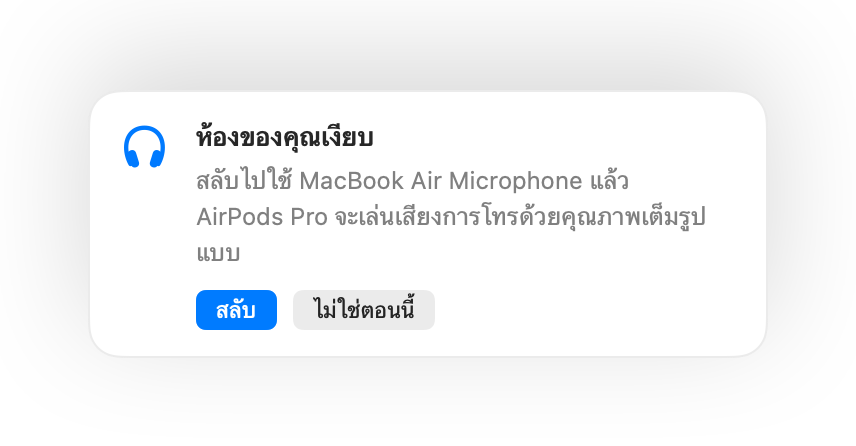

ทำไม AirPods เสียงแย่ลงระหว่างการโทรบน Mac
เมื่อเข้าร่วมการโทรด้วย AirPods เสียงมักจะแบนและอู้อี้ลงทันที นี่ไม่ใช่ความเสียหายของอุปกรณ์ แต่เกิดจากเมื่อมีแอปใช้ไมโครโฟนของ AirPods บลูทูธจะสลับ AirPods ไปเป็นโหมดการโทรซึ่งเล่นเสียงทุกอย่างด้วยคุณภาพที่ต่ำลงอย่างมาก
วิธีแก้ไขคือเปลี่ยนไปพูดใส่ไมโครโฟนของ Mac แล้วให้ AirPods มีหน้าที่เล่นเสียงเพียงอย่างเดียว ในห้องที่เงียบ ไมโครโฟนของ Mac ให้เสียงที่ดีไม่แพ้กัน และเสียงการโทรจะกลับมาคมชัดเต็มคุณภาพ Muffle สามารถตรวจจับได้เมื่อห้องของคุณเงียบและจะช่วยแนะนำให้สลับไมค์
รักษาคุณภาพเสียงเต็มรูปแบบขณะโทร
- 1
ติดตั้ง Muffle แล้วเปิดการตั้งค่า “แนะนำไมโครโฟนที่ดีที่สุดสำหรับห้อง” ทิ้งไว้
- 2
เข้าร่วมการโทรโดยใช้ AirPods ตามปกติ
- 3
เมื่อ Muffle แจ้งเตือนว่าห้องของคุณเงียบ ให้คลิก สลับ
- 4
หากบริเวณรอบตัวเริ่มมีเสียงดังขึ้นในภายหลัง Muffle จะแนะนำให้กลับไปใช้ไมโครโฟนของ AirPods อีกครั้ง

- การสลับนี้จะทำงานเมื่อแอปการโทรตั้งค่าไมโครโฟนเป็นค่าเริ่มต้นของระบบ ใน Google Meet, Zoom และ Teams ให้เลือกไมโครโฟนเป็นค่าเริ่มต้นหรือตัวเลือกเดียวกับระบบ
- ควรอยู่ใกล้กับ Mac ขณะใช้งานไมโครโฟนของเครื่อง ซึ่ง Muffle จะแนะนำให้สลับใช้ก็ต่อเมื่อสามารถรับเสียงของคุณได้อย่างชัดเจนเท่านั้น
คำถามที่พบบ่อย
ทำไม AirPods เสียงไม่ดีเมื่อใช้โทรบน Mac
บลูทูธไม่สามารถส่งสัญญาณเสียงสเตอริโอคุณภาพสูงพร้อมกับเสียงพูดของคุณไปพร้อมๆ กันได้ AirPods จึงต้องลดคุณภาพลงเข้าสู่โหมดการโทรขณะที่กำลังเปิดใช้ไมโครโฟน
Muffle สลับไมโครโฟนให้เองโดยอัตโนมัติหรือไม่
ไม่ Muffle ทำหน้าที่เพียงแนะนำไมโครโฟนที่เหมาะสมกว่าเท่านั้น จะไม่มีการเปลี่ยนแปลงใดๆ จนกว่าคุณจะคลิก สลับ